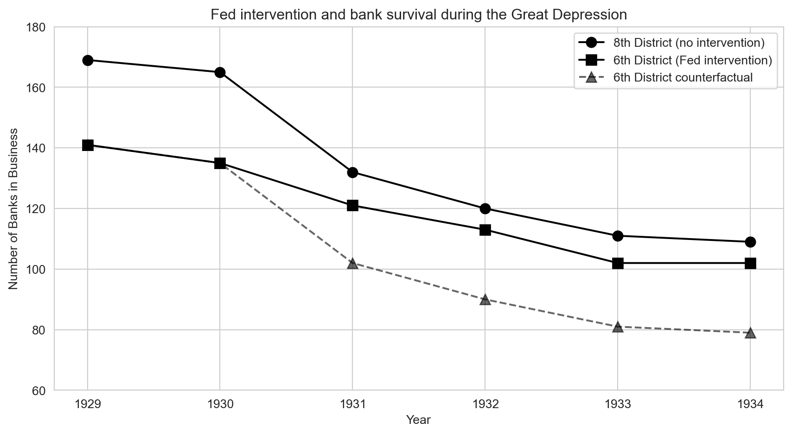

Act I
In 1930 a Nashville banking giant, Caldwell and Company, collapsed — and bank failures spread across the American South within weeks.
If the Federal Reserve had flooded struggling banks with cash, would more banks have survived, or would the Depression have swept them away regardless?
Same state, same shock, opposite policies — a natural experiment drawn by a map.
| Year | 6th District (Atlanta Fed) | 8th District (St. Louis Fed) |
|---|---|---|
| 1930 | 135 | 165 |
| 1931 | 121 | 132 |
| 1933 | 102 | 111 |
Mississippi banks in business on July 1 of each year.
The Atlanta district lost 33 banks by 1933. Did the rescue fail — or would it have been worse?
The control group’s path stands in for what the treated group would have done untreated.
Without treatment, both groups would have changed by the same amount — levels may differ.
The same units tracked over time; fixed effects absorb constant gaps; DD gives the ATT.
DD trades the coin flip of an experiment for a borrowed trend.
Act II
\[\underbrace{\text{After} - \text{Before}}_{\text{6th District: } -14 \text{ banks}} \;=\; \text{Policy effect} \;+\; \text{Depression trend}\]
From 1930 to 1931 the Atlanta district lost 14 banks — but the Depression was hitting every bank in the country at the same time.
With one group, we cannot tell the policy’s effect from the times it happened in.
| Before → after the holidays | Change | |
|---|---|---|
| You (on a diet) | gained weight | +2 lbs |
| Your friend (no diet) | gained weight | +7 lbs |
| Difference in changes | −5 lbs |
Without the diet you would have gained 7 lbs like your friend — so the diet saved you 5.
\[\delta_{DD} = \underbrace{\left(\bar{Y}_{\text{treat, after}} - \bar{Y}_{\text{treat, before}}\right)}_{\text{change in treated}} - \underbrace{\left(\bar{Y}_{\text{control, after}} - \bar{Y}_{\text{control, before}}\right)}_{\text{change in control}}\]
Two differences: first over time within each group, then across the groups.
The control group’s change is our estimate of what time alone would have done to the treated group.
Differencing over time cancels each group’s permanent level; differencing across groups cancels shocks that hit both.
\[\delta_{DD} \;=\; \text{Treatment effect} \;+\; \underbrace{\left(\text{Trend}_{\text{treat}} - \text{Trend}_{\text{control}}\right)}_{\text{zero under parallel trends}}\]
Parallel trends: absent treatment, both groups would have changed by the same amount.
Parallel trends is the assumption that carries the whole design — and it can never be fully tested.
Groups can start miles apart; they only need to travel in the same direction at the same speed.

Banks in business in each district, 1929–1934. Solid: actual; dashed: the 6th District’s counterfactual.
After 1930 the tight-credit 8th District lost banks much more quickly than the easy-credit 6th.
\[\text{Counterfactual 6th}_t = 135 + \left(\text{8th}_t - 165\right)\]
| Year | 6th District, actual | 6th District, counterfactual |
|---|---|---|
| 1931 | 121 | 102 |
| 1932 | 113 | 90 |
| 1933 | 102 | 81 |
| 1934 | 102 | 79 |
The gap between actual and counterfactual is the number of banks the policy kept open.
| Year | Change in 6th (treated) | Change in 8th (control) | DD (banks saved) |
|---|---|---|---|
| 1931 | −14 | −33 | 19 |
| 1932 | −22 | −45 | 23 |
| 1933 | −33 | −54 | 21 |
| 1934 | −33 | −56 | 23 |
Changes measured relative to 1930.
Easy credit saved about 20 banks — and the gap persisted for years after the panic.
import pandas as pd # pandas → load and reshape tables
# every course dataset lives in the repo's data/ folder on GitHub
GITHUB_DATA_URL = "https://raw.githubusercontent.com/cmg777/intro2causal/main/data/"
banks = pd.read_csv(GITHUB_DATA_URL + "ch5/banks_clean.csv").set_index("year")
change_6 = banks["bib6"] - banks.loc[1930, "bib6"] # treated (Atlanta) change since 1930
change_8 = banks["bib8"] - banks.loc[1930, "bib8"] # control (St. Louis) change since 1930
dd = change_6 - change_8 # DD = treated change − control change
print(dd.loc[1931:]) # 19, 23, 21, 23 banks saved\[Y_{st} = \alpha + \delta \, D_{st} + \sum_s \beta_s \, \text{STATE}_s + \sum_t \gamma_t \, \text{YEAR}_t + e_{st}\]
\(Y_{st}\): death rate in state \(s\), year \(t\) (mrate) · \(D_{st}\): treatment (legal) · \(\delta\): the DD effect.
The coefficient \(\delta\) generalizes “treated change minus control change” to many groups and periods.
Together they leave only within-state, over-time variation that differs from the national pattern.
Standard error for the legal effect |
SE | t |
|---|---|---|
| Robust, treats every state-year as independent | 2.72 | 3.97 |
| Clustered by state | 4.42 | 2.44 |
All-cause death rate, state and year fixed effects; estimate 10.80 in both rows.
Ignoring serial correlation would shrink the standard error by nearly 40% — false confidence.
| When | What changed |
|---|---|
| 1933 | Prohibition ends; each state sets its own drinking age |
| 1970–1975 | Many states lower the age to 18, each on its own date |
| 1980s | States raise it back to 21, again at different dates |
| 1984 | Federal legislation pushes every state toward 21 |
Panel: 51 states \(\times\) 14 years (1970–1983) = 714 state-years of death rates for 18–20 year olds.
Staggered adoption creates many treated-vs-control comparisons, not just one.
\[D_{st} = \text{fraction of 18–20 year olds in state } s \text{ allowed to drink in year } t\]
A continuous dose: \(\delta\) is the effect of moving from no legal access to full legal access.
pf.feols call runs the regression DD!pip install -q pyfixest # pyfixest is not preinstalled in Colab
import pandas as pd # pandas → load tables
import pyfixest as pf # pyfixest → regressions with fixed effects
GITHUB_DATA_URL = "https://raw.githubusercontent.com/cmg777/intro2causal/main/data/"
deaths = pd.read_csv(GITHUB_DATA_URL + "ch5/deaths_clean.csv") # state × year × cause
allcause = deaths[deaths["dtype"] == "all"] # 51 states × 14 years = 714 rows
# death rate on legal-drinking share; absorb state and year fixed effects after "|"
m = pf.feols("mrate ~ legal | state + year", data=allcause,
vcov={"CRV1": "state"}) # cluster SEs by state
m.summary() # legal: 10.80 (SE 4.42)| Outcome: all-cause deaths per 100,000 aged 18–20 | Estimate |
|---|---|
| Effect of full legal access, \(\delta\) | 10.80 |
| Standard error (clustered by state) | 4.42 |
| t-statistic | 2.44 |
Across specifications the effect ranges from about 8 to 12 deaths per 100,000.
Letting 18–20 year olds drink legally made them measurably more likely to die.
| Cause of death | legal effect (SE) |
t |
|---|---|---|
| All causes | 10.80 (4.42) | 2.44 |
| Motor-vehicle accidents | 7.59 (2.41) | 3.16 |
| Suicide | 0.59 (0.57) | 1.04 |
| Homicide | 0.50 (0.93) | 0.54 |
About 7–8 of the ~11 extra deaths happened on the road.
| Cause of death | legal effect (SE) |
t |
|---|---|---|
| Motor-vehicle accidents | 7.59 (2.41) | 3.16 |
| Internal causes (disease) | 1.33 (1.53) | 0.87 |
Internal causes: cancer, heart disease and other illnesses with no short-run link to legal drinking.
If DD “found” an effect on disease, we would suspect a confounding trend; it finds none.
!pip install -q pyfixest # pyfixest is not preinstalled in Colab
import pandas as pd # pandas → load tables
import pyfixest as pf # pyfixest → regressions with fixed effects
GITHUB_DATA_URL = "https://raw.githubusercontent.com/cmg777/intro2causal/main/data/"
deaths = pd.read_csv(GITHUB_DATA_URL + "ch5/deaths_clean.csv") # state × year × cause
for cause in ["all", "MVA", "suicide", "homicide", "internal"]: # one DD per cause
d = deaths[deaths["dtype"] == cause] # keep one cause
# same regression DD each time: state + year FE, SEs clustered by state
m = pf.feols("mrate ~ legal | state + year", data=d, vcov={"CRV1": "state"})
print(cause, round(m.coef()["legal"], 2), round(m.se()["legal"], 2)) # coef, SE| Cause of death | Baseline DD | With state-specific trends |
|---|---|---|
| All causes | 10.80 (4.42) | 8.47 (4.90) |
| Motor-vehicle accidents | 7.59 (2.41) | 6.64 (2.55) |
| Internal causes (placebo) | 1.33 (1.53) | 0.08 (1.86) |
Standard errors in parentheses, clustered by state.
The drinking-age effect is a break from each state’s own path, not a pre-existing drift.
!pip install -q pyfixest # pyfixest is not preinstalled in Colab
import pandas as pd # pandas → load tables
import pyfixest as pf # pyfixest → regressions with fixed effects
GITHUB_DATA_URL = "https://raw.githubusercontent.com/cmg777/intro2causal/main/data/"
deaths = pd.read_csv(GITHUB_DATA_URL + "ch5/deaths_clean.csv") # state × year × cause
mva = deaths[deaths["dtype"] == "MVA"].copy() # motor-vehicle deaths only
mva["year_num"] = mva["year"] - 1970 # years since 1970 (0, 1, …, 13)
# i(state, year_num) gives every state its own linear time trend
m = pf.feols("mrate ~ legal + i(state, year_num) | state + year",
data=mva, vcov={"CRV1": "state"}) # cluster SEs by state
print(m.coef()["legal"], m.se()["legal"]) # 6.64 (2.55) vs 7.59 without trends| Cause of death | Unweighted | Population-weighted |
|---|---|---|
| All causes | 10.80 (4.42) | 12.41 (4.43) |
| Motor-vehicle accidents | 7.59 (2.41) | 7.50 (2.18) |
| Suicide | 0.59 (0.57) | 1.49 (0.85) |
| Internal causes (placebo) | 1.33 (1.53) | 1.89 (1.71) |
Whether each state or each young person counts equally, the effect is about 7–8 on the road.
weights="pop" turns the regression into weighted least squares!pip install -q pyfixest # pyfixest is not preinstalled in Colab
import pandas as pd # pandas → load tables
import pyfixest as pf # pyfixest → regressions with fixed effects
GITHUB_DATA_URL = "https://raw.githubusercontent.com/cmg777/intro2causal/main/data/"
deaths = pd.read_csv(GITHUB_DATA_URL + "ch5/deaths_clean.csv") # state × year × cause
allcause = deaths[deaths["dtype"] == "all"] # all-cause death rates
# weights="pop" → weighted least squares: big states count more
m = pf.feols("mrate ~ legal | state + year", data=allcause,
weights="pop", vcov={"CRV1": "state"}) # cluster SEs by state
print(m.coef()["legal"], m.se()["legal"]) # 12.41 (4.43) vs 10.80 unweighted| Cause of death | legal effect (SE) |
Beer-tax effect (SE) |
|---|---|---|
| All causes | 10.98 (4.52) | 1.51 (8.74) |
| Motor-vehicle accidents | 7.59 (2.47) | 3.82 (5.20) |
State and year fixed effects; SEs clustered by state. Baseline without the control: 10.80 and 7.59.
A policy that changed at the same time does not explain the result away.
| RCT (Ch 1) | IV (Ch 3) | RD (Ch 4) | DD (Ch 5) | |
|---|---|---|---|---|
| Key requirement | Random assignment | Valid instrument | Sharp cutoff | Parallel trends |
| Handles unobservables? | Yes, by randomization | Yes, via the instrument | Yes, at the cutoff | Only time-invariant ones |
| Estimates | ATE | LATE (compliers) | Local effect at cutoff | ATT (treated group) |
| Data structure | Cross-section | Cross-section or panel | Running variable | Panel (group \(\times\) time) |
DD is the workhorse when policy varies across places and over time but no one flipped a coin.
Different designs with different assumptions pointing the same way make the evidence far stronger.
| Water company | Before 1852 | After 1852 | Cholera deaths |
|---|---|---|---|
| Lambeth (treated) | Polluted stretch of the Thames | Moved intake upstream | Fell sharply |
| Southwark & Vauxhall (control) | Polluted stretch of the Thames | Same polluted intake | No comparable fall |
The change appeared only where the water changed — so cholera traveled by water, not by “bad air”.
Act III
Objection. The Atlanta district had 135 banks and St. Louis 165 — they are too different to compare.
Response. DD differences away any fixed gap. It needs the groups to share a trend, not a level — the 30-bank gap cancels in the first difference.
Objection. With state and year fixed effects, nothing else can explain the result.
Response. Fixed effects remove only what is constant within a state or common to all states in a year. A state-specific change over time — like a new beer tax — survives them, which is why we add trends, controls and placebos.